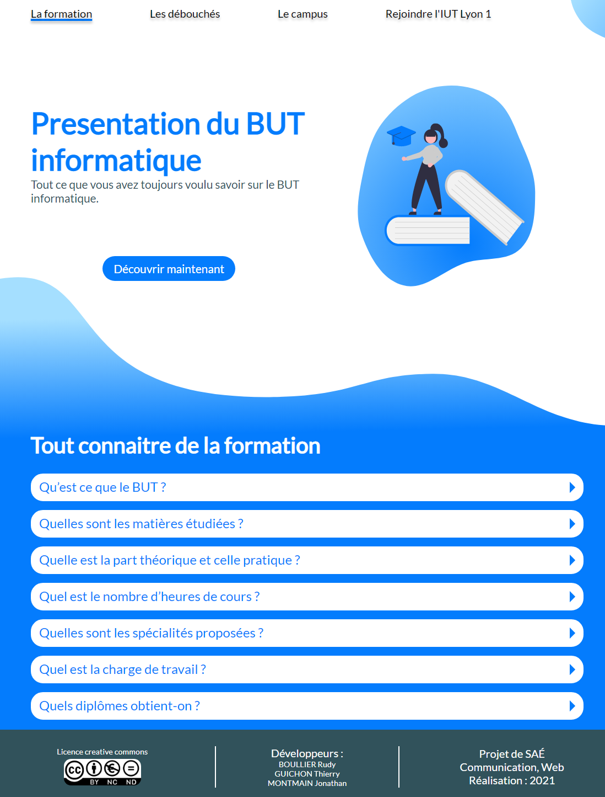
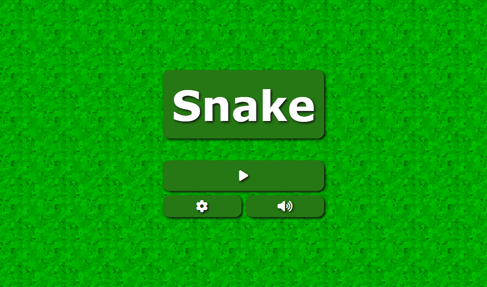
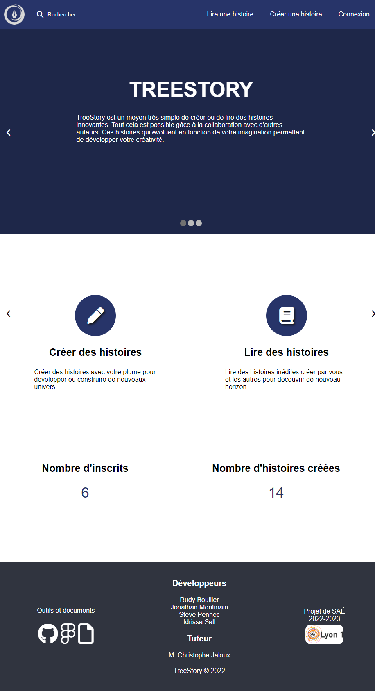
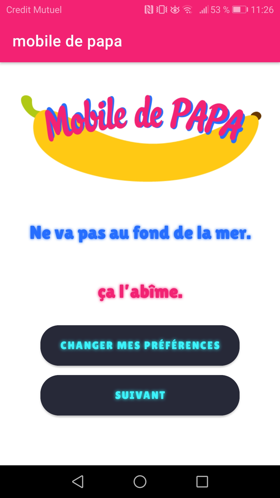

| Développer des applications informatiques simples | AC 1 Implémenter des conceptions simples |
|---|---|
| AC 2 Élaborer des conceptions simple | |
| AC 3 Faire des essais et évaluer leurs résultats en regard des spécifications | |
| AC 4 Développer des interfaces utilisateurs | |
| Partir des exigences et aller jusqu'à une application complète | AC 1 Élaborer et implémenter les spécifications fonctionnelles et non fonctionnelles à partir des exigences |
| AC 2 Appliquer des principes d'accessibilité et d'ergonomie | |
| AC 3 Adopter de bonnes pratiques de conception et de programmation | |
| AC 4 Vérifier et valider la qualité de l'application par les tests | |
| Adapter des applications sur un ensemble de supports (embarqué, web, mobile, IoT, ...) | AC 1 Choisir et implémenter les architectures adaptées |
| AC 2 Faire évoluer une application existante | |
| AC 3 Intégrer des solutions dans un environnement de production |
L'objectif de ce projet est de réaliser un annuaire en C. Pour cela, nous avions un jeu de données qui contient des noms, prénoms, numéro de téléphone, adresse et autres… Tout cela devait être réalisé soit dans la console directement ou pour les personnes un peu plus avancer dans une interface graphique.

L'objectif de ce projet est de réaliser une application d'analyse de graphe en Java.
GRAph Map Analisys
L'objectif de ce projet est de réaliser un site web de présentation de BUT informatique.
Site BUT info L'objectif de ce projet est de réaliser un Snake en JavaScript. Pour cela, nous devions faire ce projet en binôme.
Snake L'objectif de ce projet est de réaliser une application web permettant la création d'histoire collaborative.
Treestory L'objectif de ce projet est de réaliser une application mobile qui utilise une API. Ce projet consiste à lire des blagues d'une API qui se nomme blagues-api.
mobile de papa 